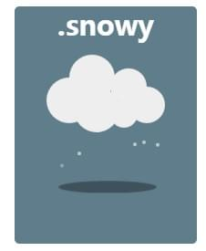
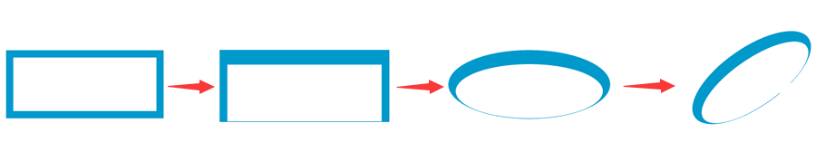

box-shadow 在前端的 CSS 编写工作想必十分常见。但是 box-shadow 除去它的常规用法，其实还存在许多不为人知的奇技淫巧。
box-shadow 常规用法
说到 box-shadow ，首先想到的必然是它能够生成阴影，所以称之为 shaodow ，简单看看它的语法：
基础属性语法
box-shadow 属性向框添加一个或多个阴影。
box-shadow: h-shadow v-shadow blur spread color inset;
像这样 box-shadow: 10px 10px 5px #888888; 除此之外，我们要知道，box-shadow 是分外 shadow 和内 shadow 的，内阴影即是在属性上添加 inset 。
OK，本文已经假设你对 box-shadow 有了一定的了解，在此基础上，我们再看看 box-shadow 有什么其它妙用。
box-shadow 模拟多边框
通常而言，我们会给许多元素添加边框 border，但是当如果需要多重边框，这个时候，由于 border 单重的限制，box-shadow 就可以闪亮登场了。我们可以轻松的使用外阴影或者内阴影来模拟边框效果。
可以看到，由内至外，这里利用 box-shadow ，设置了白色、黑色、灰色三层边框及最外层带模糊的阴影。
box-shadow 有一个参数是设置 blur 的，即是模糊的距离，在上面的例子中，即是第二重阴影 0 0 0 10px #333, 中的第三个 0 ，当 blur 的值为 0 ，那么阴影本身是不会模糊的，那么就很容易模拟出边框的效果。
而且，元素可以设置多重阴影，并且它们存在层叠关系，离 box-shadow 最近设置的层叠优先级最高，依次递减，这个对照代码很好理解。
当然，值得注意的是：
阴影并不是边框，它们并不占有实际的空间，也不能归属于
box-sizing的范围。不过，你可以通过使用内边距或外边距（取决于阴影是内部的还是外部的）占据额外的空间来模拟。上述示例模拟的边框是位于元素外部的。它不能捕获类似悬停和点击的鼠标事件。如果事件很重要，那么可以通过添加 inset 关键字让阴影出现在元素的内部。注意，你可能需要添加额外的内边距来扩充空间。
box-shadow 模拟半透明遮罩层
很多时候，我们需要用到类似下图这样的遮罩层，通过半透明遮罩层把背景调暗，凸显某些 UI 组件，提升用户体验。
常规的做法通常都会用到一个额外的元素，用作遮罩层，至少也是一个伪元素， before 或者 after。
不考虑低版本的兼容性的话，其实用 box-shadow 也可以模拟遮罩层这种效果。
这里还有一个例子，hover 时利用配合 scale 放大元素， box-shadow 产生遮罩，聚焦用户关注视野。
当然，值得注意的是：
使用这种方法不可避免的需要考虑兼容性，IE9+、Firefox 4、Chrome、Opera 以及 Safari 5.1.1 支持 box-shadow 属性。
由于每个人的浏览器视口大小不一致，为了所有情况下 box-shadow 生成的阴影都能覆盖整个页面，可能需要将阴影的尺寸
spread设置的很大。如果你真的想尝试这个方法，box-shadow 从性能角度而言属于
耗性能样式，不同样式在消耗性能方面是不同的，box-shadow 从渲染角度来讲十分耗性能，原因就是与其他样式相比，它们的绘制代码执行时间过长。虽然有 GPU 的 3D 加速，但是具体使用的时候还是值得斟酌考虑。不过你要知道，没有不变的事情，在今天性能很差的样式，可能明天就被优化，并且浏览器之间也存在差异。
下面再讲讲多重 box-shadow 能干啥：
多重 box-shadow 之简单图形
从本质上讲，box-shadow 是将自身投影到另一个地方，在很多情况下，我们是可以利用 box-shadow 来复制自身的！
利用这个特性，我们可以用 box-shadow 制作一些简单的图形，在我的单标签图形 Demo 中，有这样一个图形：

其中的云层，就是利用了 多重box-shaodw 在一个伪元素内生成的。下面我利用不同的颜色，直观的表达一下如何利用 box-shadow 绘制这个图形：
当所有阴影的颜色都是同色的时候，就很自然变成了一朵云朵：
当然，脑洞够大的话，更复杂一点的也是可以的，来看看下面这个图形，也是由单个标签完成：
其中比较困难的是其中环绕字母 e 的那个圆以及那个切入的不规则角，看看用阴影怎么把它做出来，利用了两重 box-shadow：

嗯，当然，你问我这些图形有什么用。我觉得实用性真的不强吧，我个人而言是兴趣，从中获取到了乐趣，同时也学到了很多东西，对属性本身印象也更加深刻，遇到许多 CSS 方面的问题的时候，思路更加开阔。
更多有趣的图形，可以 戳这里 – Demo
多重 box-shadow 实现立体感
这种方法运用在 text-shadow 上同样可以，可以实现文字的立体感。
运用多重 box-shadow ，不断偏移 1px ，就可以产生十分立体的感觉。
运用在按钮：
运用在文字：
多重 box-shadow 实现任意图片转换
嗯，讲真~~ 我觉得这个是最有趣的。
多重 box-shadow 还能做什么呢。由于 box-shadow 的多重性，也就是 无论多少重都可以，那么理论上任意一张图片，每一个像素点都可以由一重 1px*1px 的 box-shadow 来表示。
为了完成这个任务， canvas 刚好提供了一个方法 CanvasRenderingContext2D.getImageData 可以获取到图片每一个像素点的 rgba 值，那么图片转为一个完全由 box-shadow 表示的图片是完全可行的。
为此，我倒腾了许久，写了这么一个小插件，可以将任意图片转化为由 box-shadow 表示的单个 div 标签。

如果上面的几点还有用武之地，那么这个功能我觉得除了看似厉害之外真的是毫无实用之处，上面也说了，box-shadow 是比较耗性能的，因为即便是一个 100px*100px 的图形，转化之后都有 10000 重阴影，无论是对性能还是可读性而言，都是毁灭性的，但是讲真，还是挺有趣的。
box-shadow 就先说这些吧，box-shadow 肯定还要其它的一些妙用，细心之人可以继续挖掘之。
filter:drop-shadow
其实说到 box-shadow，就不得不提到另一个和它极为相似的 CSS3 新属性 filter:drop-shadow，filter 即是 CSS 滤镜，可以在元素呈现之前，为元素的渲染提供一些效果，如模糊、颜色转移之类的。滤镜常用于调整图像、背景、边框的渲染。
当然这里我们只说 filter:drop-shadow。
filter:drop-shadow 也很好玩，本想继续长篇大论讨论下去，无奈发现 张鑫旭大神两篇文章已经把我想说的都囊括了，前人栽树，后人乘凉，我也就不再献丑了。
两篇非常值得一读的文章：
另外 《CSS SECRET》（CSS揭秘）这本大作也对 filter:drop-shadow 有详细的描述，可以去看看。
希望这篇文章对大家有所帮助，尤其是在对问题解决的思维层面上。
到此本文结束，如果还有什么疑问或者建议，可以多多交流，原创文章，文笔有限，才疏学浅，文中若有不正之处，万望告知。